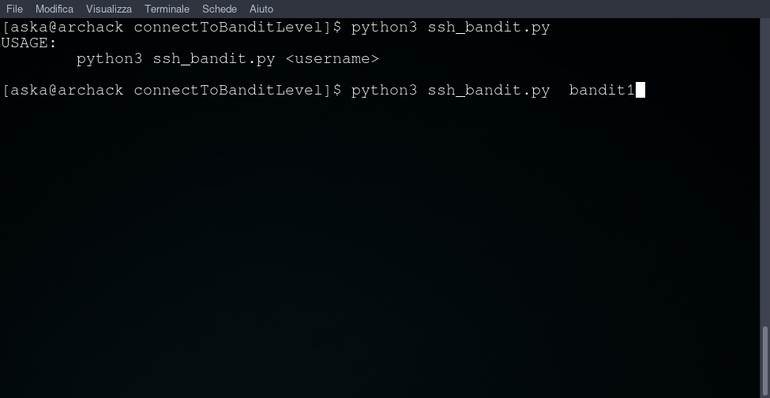
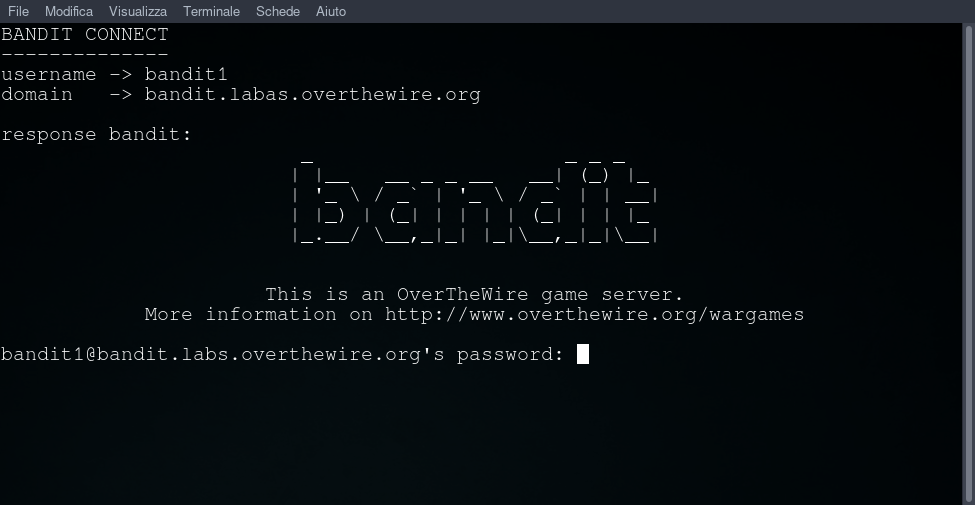
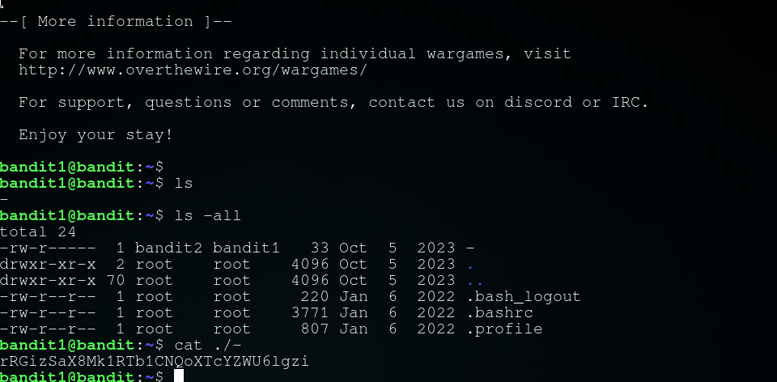

Obiettivo di livello
La password per il livello successivo è memorizzata in un file chiamato - che si trova nella home directory
Comandi di cui potresti aver bisogno per risolvere questo livello
ls , cd , cat , file , du , find
Materiale di lettura utile
- cercare su Google “dashed filename”
- Guida avanzata allo scripting di Bash - Capitolo 3 - Caratteri speciali
Soluzione livello 1
ci connettiamo con ssh alla porta 2220 con user e passowrd del livello 0
oppure scarica il nosto script da Github e avvialo con python3 ssh_bandit.py bandit1

uso il comando cat
attraverso il comando cat ./- indichiamo al comando di farci vedere il file chiamato - della directory corrente (./)
password: rRGizSaX8Mk1RTb1CNQoXTcYZWU6lgzi